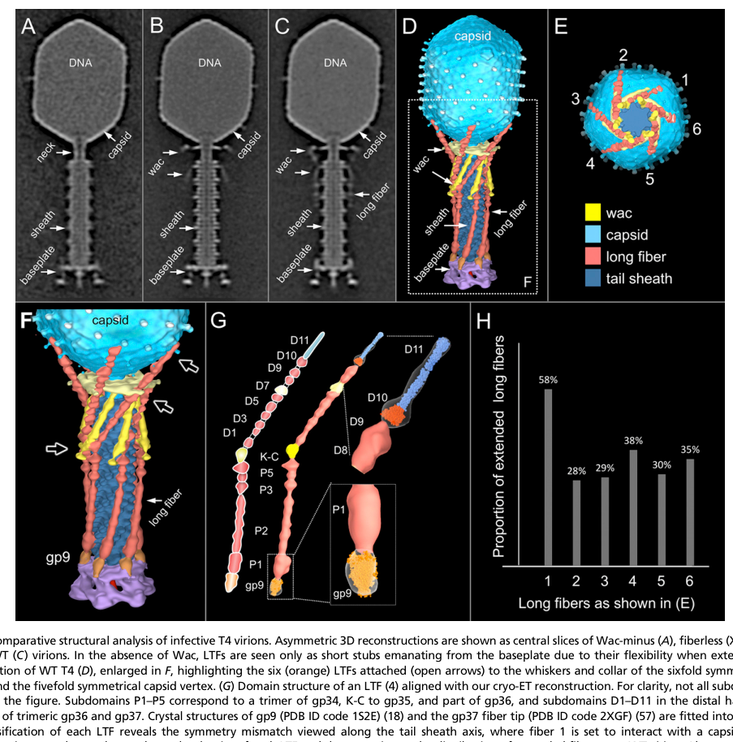

TODO: Add description for P10927
| GO Term | Evidence | Action | Reason |
|---|---|---|---|
|
GO:0019076
viral release from host cell
|
IEA
GO_REF:0000002 |
PENDING |
Summary: TODO: Review this GOA annotation
|
|
GO:0098003
viral tail assembly
|
IEA
GO_REF:0000043 |
PENDING |
Summary: TODO: Review this GOA annotation
|
|
GO:0098015
virus tail
|
IEA
GO_REF:0000043 |
PENDING |
Summary: TODO: Review this GOA annotation
|
|
GO:0098025
virus tail, baseplate
|
IEA
GO_REF:0000043 |
PENDING |
Summary: TODO: Review this GOA annotation
|
|
GO:0098025
virus tail, baseplate
|
IDA
PMID:27193680 Structure of the T4 baseplate and its function in triggering... |
PENDING |
Summary: TODO: Review this GOA annotation
|
The research report should be a detailed narrative explaining the function, biological processes, and localization of the gene product. Citations should be given for all claims.
You should prioritize authoritative reviews and primary scientific literature when conducting research. You can supplement
this with annotations you find in gene/protein databases, but these can be outdated or inaccurate.
We are specifically interested in the primary function of the gene - for enzymes, what reaction is catalyzed, and what is the substrate specificity? For transporters, what is the substrate? For structural proteins or adapters, what is the broader structural role? For signaling molecules, what is the role in the pathway.
We are interested in where in or outside the cell the gene product carries out its function.
We are also interested in the signaling or biochemical pathways in which the gene functions. We are less interested in broad pleiotropic effects, except where these elucidate the precise role.
Include evidence where possible. We are interested in both experimental evidence as well as inference from structure, evolution, or bioinformatic analysis. Precise studies should be prioritized over high-throughput, where available.
The target UniProt P10927 corresponds to Enterobacteria phage T4 (bacteriophage T4) baseplate protein gp9, also called gene product 9 (gene name “9”). This is a structural virion protein found in the tail baseplate of T4, not an enzyme. Across authoritative structural reviews and primary structural work, T4 gp9 is consistently described as a trimeric baseplate protein that connects/anchors the long tail fibers to the baseplate and participates in transmitting the adsorption signal to trigger baseplate rearrangement and sheath contraction (mesyanzhinov2004moleculararchitectureof pages 5-6, rossmann2004thebacteriophaget4 pages 2-4, leiman2000structureofbacteriophage pages 1-3).
Key molecular properties of T4 gp9 reported in the literature match the UniProt entry for P10927: gp9 is 288 aa per monomer and forms an SDS-resistant parallel trimer (mesyanzhinov2004moleculararchitectureof pages 5-6). This protein is part of the T4 baseplate wedge/vertex region and is present at 18 copies per virion (six trimers) (rossmann2004thebacteriophaget4 pages 2-4, leiman2003structureandmorphogenesis pages 7-8).
The bacteriophage T4 baseplate is the infection control center at the distal end of the contractile tail. It functions as a mechanically sensitive “switch” that integrates receptor recognition by tail fibers with downstream conformational changes that culminate in tail sheath contraction and genome delivery.
Within this machinery, gp9’s primary function is structural and mechanosensory:
This conceptual model (fiber engagement → gp9-mediated mechanical signal → baseplate transition → sheath contraction) is a central theme in T4 tail/baseplate structural biology (arisaka2016molecularassemblyand pages 1-2, mesyanzhinov2004moleculararchitectureof pages 5-6, leiman2000structureofbacteriophage pages 1-3).
Multiple sources describe gp9 as a homotrimer with three domains, including an N-terminal coiled-coil and C-terminal beta-structured domain(s) (mesyanzhinov2004moleculararchitectureof pages 5-6, leiman2000structureofbacteriophage pages 5-7). Reported structural facts include:
These domain-level descriptions provide the basis for mapping interaction surfaces and mechanical function.
Evidence from structural/assembly synthesis and experimental assembly studies places gp9 as a component that joins late in baseplate maturation:
This late-stage incorporation and stabilization function matches the requirement that the pre-adsorption baseplate remain in a metastable state until productive adsorption occurs.
Localization and in situ evidence. Cryo-electron tomography/3D reconstructions of infection initiation directly visualize gp9 in the tail/baseplate region and show the baseplate’s large-scale conformational changes:
Receptor recognition logic. A mechanistic model summarized in a detailed T4 tail assembly review describes a two-step receptor interaction:
While this receptor specificity is part of a synthesis narrative, it provides an interpretable “pathway” for gp9: gp9 couples LTF receptor engagement to the baseplate conformational program that commits the virion to infection.
Multiple sources support gp9’s role in the mechanical switch that controls sheath contraction:
gp9 localizes to the baseplate wedge/vertex region:
gp7 (baseplate wedge backbone): In assembled baseplate, gp9 binds domain III of gp7 (yap2016roleofbacteriophage pages 3-5). Another synthesis describes the gp9 N-terminal coiled-coil domain as associating with gp7 at the upper rim (mesyanzhinov2004moleculararchitectureof pages 9-10).
Long tail fibers (functional attachment): gp9 is the long-tail-fiber connector/attachment protein (mesyanzhinov2004moleculararchitectureof pages 5-6, leiman2000structureofbacteriophage pages 1-3). Domain-level mapping of how gp9 engages fibers varies somewhat between sources:
These statements are not fully identical in which gp9 end is emphasized as “fiber-binding,” but they agree on the functional division that gp9 has a domain exposed for fiber attachment and a domain buried/associated within the baseplate for stable anchoring and/or trimerization.
gp11 (short tail fiber interface / lateral contacts): Long tail fibers are described as attaching to gp9 while also making lateral contact with gp11 (mesyanzhinov2004moleculararchitectureof pages 9-10). gp9 is placed in a functional relay LTF → gp9 → gp10 → gp11 → STFs in classic structural models (leiman2000structureofbacteriophage pages 1-3, leiman2000structureofbacteriophage pages 5-7).
gp10 (signal relay in baseplate): gp10 is described as a trimeric baseplate protein in the putative signaling pathway between gp9 and gp11 (leiman2000structureofbacteriophage pages 1-3).
Link to gp34 (proximal LTF module): A morphogenesis review describes LTF architecture with proximal module formed by the gp34 trimer and notes the LTFs are connected to the baseplate via gp9 and gp7, implying gp9 is at the proximal fiber/baseplate junction (leiman2003structureandmorphogenesis pages 8-11). The specific gp9–gp34 interface is not structurally resolved in the excerpts retrieved here.
Direct 2023–2024 primary studies specifically focused on T4 gp9 were not identified in the retrieved set; however, several 2024 authoritative sources describe new enabling approaches and adjacent findings that strengthen functional annotation and engineering of phage adsorption/baseplate systems.
These 2024 observations reinforce a modern “best practice” for gp9 annotation: combine high-confidence structural data (T4 already has this) with computational comparative structural searches and targeted functional assays when moving beyond T4 to less-characterized gp9-like proteins.
A 2024 Nature Communications paper reports a high-resolution cryo-EM structure of the intact tail machine of a cyanomyophage and uses integrated approaches (cryo-EM + mass spectrometry + biochemical assays) to assign activities to baseplate/tail components and to reannotate structural genes (yu2024structureofthe pages 1-2). While not about T4 gp9, it is a strong example of the 2023–2024 direction: intact tail-machine structures plus proteomics to improve functional annotation of baseplate components.
gp9 itself is not the most common direct engineering target in applied T4 work (capsid accessory proteins are more frequently engineered), but T4 as a platform is actively used, and this applied context depends on deep structural understanding of virion components.
Across classic, high-citation structural reviews and primary studies, gp9 is consistently positioned as a key component of the adsorption-to-injection coupling mechanism in contractile-tailed phages:
A key interpretive point is that gp9 should be functionally annotated not as a receptor-binding enzyme but as a mechanical adapter/signal-transmission element: it must both (i) physically attach LTFs and (ii) allow controlled movement/pivoting and coupling into baseplate remodeling (mesyanzhinov2004moleculararchitectureof pages 9-10, mesyanzhinov2004moleculararchitectureof pages 5-6).
Protein: Baseplate protein gp9 (gene product 9) (UniProt P10927)
Primary function: Trimeric baseplate wedge/vertex structural protein that forms the socket/connector for long tail fibers and participates in signal transmission/mechanical triggering that couples host receptor engagement by long tail fibers to the dome → star baseplate conformational transition and subsequent tail sheath contraction (arisaka2016molecularassemblyand pages 1-2, mesyanzhinov2004moleculararchitectureof pages 5-6, leiman2000structureofbacteriophage pages 1-3).
Cell/virion localization: Virion tail baseplate wedge/vertex, 18 copies (six trimers) positioned near the long tail fiber attachment sites (rossmann2004thebacteriophaget4 pages 2-4, leiman2003structureandmorphogenesis pages 7-8). In situ imaging explicitly labels gp9 at the baseplate–long tail fiber junction (hu2015structuralremodelingof media 424ca8ab, hu2015structuralremodelingof media f0be2a9f).
Key interaction partners: gp7 (binding to domain III), long tail fibers (proximal attachment), and spatial/functional coupling with gp10 and gp11 as part of the triggering network; long tail fibers can also make lateral contact with gp11 (mesyanzhinov2004moleculararchitectureof pages 9-10, leiman2000structureofbacteriophage pages 5-7, yap2016roleofbacteriophage pages 3-5).
| Citation | Type | Method | Main gp9 findings | Key quantitative details | URL / DOI |
|---|---|---|---|---|---|
| Leiman et al., 2000 | Primary | X-ray crystallography; structural analysis | Defines gp9 as a trimeric trigger protein linking long tail fibers (LTFs) to the baseplate; places gp9 in the signaling path LTF → gp9 → gp10 → gp11 → short tail fibers, transmitting receptor-recognition to baseplate rearrangement and DNA ejection (leiman2000structureofbacteriophage pages 1-3) | Trimeric gp9; part of sixfold baseplate architecture (leiman2000structureofbacteriophage pages 1-3) | https://doi.org/10.1006/jmbi.2000.3989 |
| Leiman et al., 2003 | Review | Structural synthesis of T4 morphogenesis literature | Places gp9 at the wedge vertex of the baseplate, functionally tied to LTF attachment and the baseplate conformational transition that precedes sheath contraction (leiman2003structureandmorphogenesis pages 7-8) | 31.0 kDa; copy number 18 per virion; wedge-vertex localization (leiman2003structureandmorphogenesis pages 7-8) | https://doi.org/10.1007/s00018-003-3072-1 |
| Mesyanzhinov et al., 2004 | Review | Structural/biochemical synthesis | Describes gp9 as the structural protein connecting LTFs to the baseplate; permits up/down fiber movement; stabilizes the baseplate against abortive triggering; initiates the transition to the six-pointed star during infection; recombinant gp9 can rescue gp9-defective particles in vitro (mesyanzhinov2004moleculararchitectureof pages 5-6) | 288 aa/monomer; SDS-resistant parallel trimer; atomic structure at 2.3 Å; ~60 × 60 × 130 Å; domains: N-term coiled-coil (1–59), middle (60–164), C-term (175–288) (mesyanzhinov2004moleculararchitectureof pages 5-6) | https://doi.org/10.1007/pl00021751 |
| Rossmann et al., 2004 | Review | Cryo-EM fitting plus crystallographic synthesis | Summarizes gp9 as the LTF attachment site in the wedge region; notes gp9 trimer fits uniquely into the baseplate reconstruction and helps define baseplate organization (rossmann2004thebacteriophaget4 pages 2-4) | ~31.0 kDa; trimer; 18 monomers total, implying six gp9 trimers in the baseplate (rossmann2004thebacteriophaget4 pages 2-4) | https://doi.org/10.1016/j.sbi.2004.02.001 |
| Hu et al., 2015 | Primary | Cryo-electron tomography / 3D reconstruction of infection initiation | Visualizes gp9 in situ at the baseplate-LTF interface; shows sixfold LTF arrangement and supports gp9’s role in connecting fibers to the baseplate during infection initiation; documents the hexagon-to-star baseplate transition after host attachment (hu2015structuralremodelingof media 424ca8ab, hu2015structuralremodelingof media f0be2a9f) | Sixfold tail fiber symmetry; figure-level evidence labeling gp9 and attached LTF architecture (hu2015structuralremodelingof media 424ca8ab, hu2015structuralremodelingof media f0be2a9f) | https://doi.org/10.1073/pnas.1501064112 |
| Yap et al., 2016 | Primary | Cryo-EM reconstruction; assembly analysis | Shows gp9 binds domain III of gp7 late in assembly; gp9 and gp11–gp12 stabilize the dome-shaped baseplate; identifies gp9 as a late-added structural stabilizer before infection-triggered rearrangement (yap2016roleofbacteriophage pages 3-5) | gp9 incorporated after wedge assembly; binds gp7 domain III in the assembled baseplate (yap2016roleofbacteriophage pages 3-5) | https://doi.org/10.1073/pnas.1601654113 |
| Arisaka et al., 2016 | Review | Structural/assembly review integrating cryo-EM and crystallography | Summarizes gp9 as the socket for LTFs and direct transmitter of receptor-binding signal into the baseplate; receptor engagement via LTFs triggers dome-to-star conversion, short tail fiber deployment, and sheath contraction (arisaka2016molecularassemblyand pages 1-2, arisaka2016molecularassemblyand pages 2-4) | 288 aa; stoichiometry listed as 18 copies per particle / trimeric assembly note; associated structures include PDB 1S2E, 5IV5, 5IV7 (arisaka2016molecularassemblyand pages 1-2, arisaka2016molecularassemblyand pages 2-4) | https://doi.org/10.1007/s12551-016-0230-x |
| Mesyanzhinov et al., 2004 | Review | Structural synthesis | Provides detailed mechanistic model: gp9 C-terminal domain is the collinear LTF attachment site; N-terminal coiled-coil associates with gp7; gp9 can pivot and likely transmits receptor-induced mechanical changes into gp7/gp8, baseplate flattening, and sheath contraction (mesyanzhinov2004moleculararchitectureof pages 9-10) | gp9 density ~180 Å from baseplate axis; pivot up to ~55° about a radial axis (mesyanzhinov2004moleculararchitectureof pages 9-10) | https://doi.org/10.1007/pl00021751 |
| Leprince & Mahillon, 2023 | Review (contextual) | Review of phage adsorption biology | Uses T4 as the best-characterized adsorption/baseplate model; provides modern context for gp9-like baseplate attachment modules in adsorption systems, though not a gp9-focused primary study (hu2015structuralremodelingof media 424ca8ab, hu2015structuralremodelingof media f0be2a9f) | Contextual only; no new gp9-specific quantitative measurements extracted here (hu2015structuralremodelingof media 424ca8ab, hu2015structuralremodelingof media f0be2a9f) | https://doi.org/10.3390/v15010196 |
| Zhu et al., 2024 | Review (contextual) | Translational review of T4 biotechnology/vaccine platform | Highlights current real-world use of bacteriophage T4 as an engineering platform; relevant as evidence that deep structural understanding of T4 virion proteins underpins applied T4 design, although gp9 itself is not the main engineering target (hu2015structuralremodelingof media 424ca8ab, hu2015structuralremodelingof media f0be2a9f) | T4 capsid platform supports dense antigen display; contextual application rather than gp9 quantitation (hu2015structuralremodelingof media 424ca8ab, hu2015structuralremodelingof media f0be2a9f) | https://doi.org/10.1146/annurev-virology-111821-111145 |
Table: This table summarizes the key literature supporting functional annotation of bacteriophage T4 baseplate protein gp9 (UniProt P10927). It highlights the strongest evidence for gp9’s role as the long-tail-fiber socket and infection-triggering baseplate component, with quantitative structural details where available.
References
(mesyanzhinov2004moleculararchitectureof pages 5-6): V. V. Mesyanzhinov, P. G. Leiman, V. A. Kostyuchenko, L. P. Kurochkina, K. A. Miroshnikov, N. N. Sykilinda, and M. M. Shneider. Molecular architecture of bacteriophage t4. Biochemistry (Moscow), 69:1190-1202, Nov 2004. URL: https://doi.org/10.1007/pl00021751, doi:10.1007/pl00021751. This article has 61 citations.
(rossmann2004thebacteriophaget4 pages 2-4): Michael G Rossmann, Vadim V Mesyanzhinov, Fumio Arisaka, and Petr G Leiman. The bacteriophage t4 dna injection machine. Current opinion in structural biology, 14 2:171-80, Apr 2004. URL: https://doi.org/10.1016/j.sbi.2004.02.001, doi:10.1016/j.sbi.2004.02.001. This article has 250 citations and is from a peer-reviewed journal.
(leiman2000structureofbacteriophage pages 1-3): P.G. Leiman, V.A. Kostyuchenko, M.M. Schneider, L.P. Kurochkina, V.V. Mesyanzhinov, and M.G. Rossmann. Structure of bacteriophage t4 gene product 11, the interface between the baseplate and short tail fibers. Journal of molecular biology, 301 4:975-85, Aug 2000. URL: https://doi.org/10.1006/jmbi.2000.3989, doi:10.1006/jmbi.2000.3989. This article has 67 citations and is from a domain leading peer-reviewed journal.
(leiman2003structureandmorphogenesis pages 7-8): P. G. Leiman, S. Kanamaru, V. V. Mesyanzhinov, F. Arisaka, and M. G. Rossmann. Structure and morphogenesis of bacteriophage t4. Cellular and Molecular Life Sciences CMLS, 60:2356-2370, Nov 2003. URL: https://doi.org/10.1007/s00018-003-3072-1, doi:10.1007/s00018-003-3072-1. This article has 359 citations.
(arisaka2016molecularassemblyand pages 1-2): Fumio Arisaka, Moh Lan Yap, Shuji Kanamaru, and Michael G. Rossmann. Molecular assembly and structure of the bacteriophage t4 tail. Biophysical Reviews, 8:385-396, Nov 2016. URL: https://doi.org/10.1007/s12551-016-0230-x, doi:10.1007/s12551-016-0230-x. This article has 55 citations and is from a peer-reviewed journal.
(leiman2000structureofbacteriophage pages 5-7): P.G. Leiman, V.A. Kostyuchenko, M.M. Schneider, L.P. Kurochkina, V.V. Mesyanzhinov, and M.G. Rossmann. Structure of bacteriophage t4 gene product 11, the interface between the baseplate and short tail fibers. Journal of molecular biology, 301 4:975-85, Aug 2000. URL: https://doi.org/10.1006/jmbi.2000.3989, doi:10.1006/jmbi.2000.3989. This article has 67 citations and is from a domain leading peer-reviewed journal.
(yap2016roleofbacteriophage pages 3-5): Moh Lan Yap, Thomas Klose, Fumio Arisaka, Jeffrey A. Speir, David Veesler, Andrei Fokine, and Michael G. Rossmann. Role of bacteriophage t4 baseplate in regulating assembly and infection. Proceedings of the National Academy of Sciences, 113:2654-2659, Feb 2016. URL: https://doi.org/10.1073/pnas.1601654113, doi:10.1073/pnas.1601654113. This article has 113 citations and is from a highest quality peer-reviewed journal.
(hu2015structuralremodelingof media 424ca8ab): Bo Hu, William Margolin, Ian J. Molineux, and Jun Liu. Structural remodeling of bacteriophage t4 and host membranes during infection initiation. Proceedings of the National Academy of Sciences, 112:E4919-E4928, Aug 2015. URL: https://doi.org/10.1073/pnas.1501064112, doi:10.1073/pnas.1501064112. This article has 317 citations and is from a highest quality peer-reviewed journal.
(hu2015structuralremodelingof media f0be2a9f): Bo Hu, William Margolin, Ian J. Molineux, and Jun Liu. Structural remodeling of bacteriophage t4 and host membranes during infection initiation. Proceedings of the National Academy of Sciences, 112:E4919-E4928, Aug 2015. URL: https://doi.org/10.1073/pnas.1501064112, doi:10.1073/pnas.1501064112. This article has 317 citations and is from a highest quality peer-reviewed journal.
(mesyanzhinov2004moleculararchitectureof pages 9-10): V. V. Mesyanzhinov, P. G. Leiman, V. A. Kostyuchenko, L. P. Kurochkina, K. A. Miroshnikov, N. N. Sykilinda, and M. M. Shneider. Molecular architecture of bacteriophage t4. Biochemistry (Moscow), 69:1190-1202, Nov 2004. URL: https://doi.org/10.1007/pl00021751, doi:10.1007/pl00021751. This article has 61 citations.
(leiman2003structureandmorphogenesis pages 8-11): P. G. Leiman, S. Kanamaru, V. V. Mesyanzhinov, F. Arisaka, and M. G. Rossmann. Structure and morphogenesis of bacteriophage t4. Cellular and Molecular Life Sciences CMLS, 60:2356-2370, Nov 2003. URL: https://doi.org/10.1007/s00018-003-3072-1, doi:10.1007/s00018-003-3072-1. This article has 359 citations.
(parker2024bacteriophagebasedbioanalysis pages 1-3): David R. Parker and Sam R. Nugen. Bacteriophage-based bioanalysis. Annual Review of Analytical Chemistry, 17:393-410, Jul 2024. URL: https://doi.org/10.1146/annurev-anchem-071323-084224, doi:10.1146/annurev-anchem-071323-084224. This article has 10 citations and is from a peer-reviewed journal.
(sørensen2024renewedinsightsinto pages 1-2): Anders Nørgaard Sørensen and Lone Brøndsted. Renewed insights into ackermannviridae phage biology and applications. npj Viruses, Aug 2024. URL: https://doi.org/10.1038/s44298-024-00046-0, doi:10.1038/s44298-024-00046-0. This article has 10 citations.
(sørensen2024renewedinsightsinto pages 2-3): Anders Nørgaard Sørensen and Lone Brøndsted. Renewed insights into ackermannviridae phage biology and applications. npj Viruses, Aug 2024. URL: https://doi.org/10.1038/s44298-024-00046-0, doi:10.1038/s44298-024-00046-0. This article has 10 citations.
(yu2024structureofthe pages 1-2): Rong-Cheng Yu, Feng Yang, Hong-Yan Zhang, Pu Hou, Kang Du, Jie Zhu, Ning Cui, Xudong Xu, Yuxing Chen, Qiong Li, and Cong-Zhao Zhou. Structure of the intact tail machine of anabaena myophage a-1(l). Nature Communications, Mar 2024. URL: https://doi.org/10.1038/s41467-024-47006-z, doi:10.1038/s41467-024-47006-z. This article has 19 citations and is from a highest quality peer-reviewed journal.
(arisaka2016molecularassemblyand pages 2-4): Fumio Arisaka, Moh Lan Yap, Shuji Kanamaru, and Michael G. Rossmann. Molecular assembly and structure of the bacteriophage t4 tail. Biophysical Reviews, 8:385-396, Nov 2016. URL: https://doi.org/10.1007/s12551-016-0230-x, doi:10.1007/s12551-016-0230-x. This article has 55 citations and is from a peer-reviewed journal.

id: P10927
gene_symbol: P10927
product_type: PROTEIN
status: INITIALIZED
taxon:
id: NCBITaxon:10665
label: Enterobacteria phage T4
description: 'TODO: Add description for P10927'
existing_annotations:
- term:
id: GO:0019076
label: viral release from host cell
evidence_type: IEA
original_reference_id: GO_REF:0000002
review:
summary: 'TODO: Review this GOA annotation'
action: PENDING
- term:
id: GO:0098003
label: viral tail assembly
evidence_type: IEA
original_reference_id: GO_REF:0000043
review:
summary: 'TODO: Review this GOA annotation'
action: PENDING
- term:
id: GO:0098015
label: virus tail
evidence_type: IEA
original_reference_id: GO_REF:0000043
review:
summary: 'TODO: Review this GOA annotation'
action: PENDING
- term:
id: GO:0098025
label: virus tail, baseplate
evidence_type: IEA
original_reference_id: GO_REF:0000043
review:
summary: 'TODO: Review this GOA annotation'
action: PENDING
- term:
id: GO:0098025
label: virus tail, baseplate
evidence_type: IDA
original_reference_id: PMID:27193680
review:
summary: 'TODO: Review this GOA annotation'
action: PENDING
references:
- id: GO_REF:0000002
title: Gene Ontology annotation through association of InterPro records with GO
terms
findings: []
- id: GO_REF:0000043
title: Gene Ontology annotation based on UniProtKB/Swiss-Prot keyword mapping
findings: []
- id: PMID:27193680
title: Structure of the T4 baseplate and its function in triggering sheath contraction.
findings: []
{kind=link}